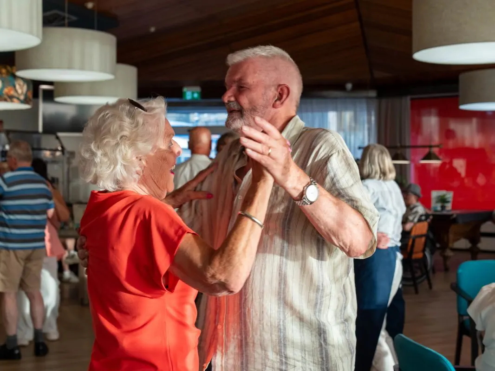

Dit evenement is afgelopen. Bekijk wat er binnenkort te doen is.
Evenement
Seniorendansavond in OBG
- Wanneerdinsdag 25 augustus 2026, 19.30 tot 22.30 uur
- WaarOBG Nijmegen
Prof. Cornelissenstraat 2 Route

Zestig-plus en dans- of muziekliefhebber? Kom dan dinsdag 25 augustus naar de seniorendansavond in OBG Nijmegen. Entertainer Hans Leijten staat garant voor een geweldige avond! Aanvang 19.30, zaal open vanaf 19.15 uur. De toegang is gratis, maar vergeet niet om contant geld mee te nemen voor de drankjes.
Seniorencafé Burgerlust organiseert elke tweede en vierde dinsdag van de maand in OBG een dansavond met live muziek. Vaste entertainers staan garant voor een gezellige avond met foxtrot, wals; maar ook beat en linedance horen tot het repertoire. Burgerlustvrijwilligers verzorgen de bar, bediening èn de gratis hapjes
Bezoekers zijn vaak trouwe gasten, maar ook veel nieuwelingen weten het danscafé te vinden.
Het is een fijne ontmoetingsplek, waar alleengaanden meer dan welkom zijn. Prima locatie ook om met je date af te spreken. Kom langs, breng een goed humeur mee en je hebt vast een onvergetelijke avond.
Meer evenementen bij OBG Nijmegen
Er staan nu geen andere evenementen van OBG Nijmegen in de agenda.
Binnenkort in Nijmegen
 UitgelichtSean Taylor24 okt, 20.00 uurDe Brauerij
25okt
UitgelichtSean Taylor24 okt, 20.00 uurDe Brauerij
25okt UitgelichtHighlight Tours in het Vrijheidsmuseum25 okt, 14.00 uurVrijheidsmuseum
25okt
UitgelichtHighlight Tours in het Vrijheidsmuseum25 okt, 14.00 uurVrijheidsmuseum
25okt Uitwisselingsconcert Harmonie Hatert met DOV Wijchen25 okt, 13.00 uur
27okt
Uitwisselingsconcert Harmonie Hatert met DOV Wijchen25 okt, 13.00 uur
27okt Filmvertoning: Het land van mijn ouders27 okt, 19.00 uurHuis van de Nijmeegse Geschiedenis
Filmvertoning: Het land van mijn ouders27 okt, 19.00 uurHuis van de Nijmeegse Geschiedenis